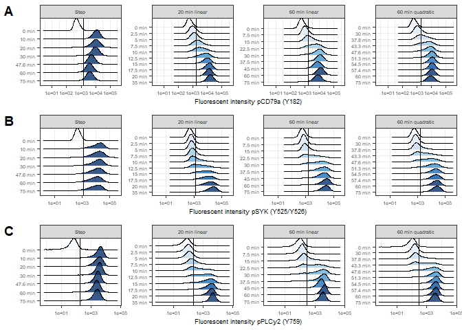

This reproducible R Markdown
analysis was created with workflowr (version
1.7.0). The Checks tab describes the reproducibility checks
that were applied when the results were created. The Past
versions tab lists the development history.
Great job! The global environment was empty. Objects defined in the
global environment can affect the analysis in your R Markdown file in
unknown ways. For reproduciblity it’s best to always run the code in an
empty environment.
The command set.seed(20230308) was run prior to running
the code in the R Markdown file. Setting a seed ensures that any results
that rely on randomness, e.g. subsampling or permutations, are
reproducible.
Great! You are using Git for version control. Tracking code development
and connecting the code version to the results is critical for
reproducibility.
The results in this page were generated with repository version 23ac408.
See the Past versions tab to see a history of the changes made
to the R Markdown and HTML files.
Note that you need to be careful to ensure that all relevant files for
the analysis have been committed to Git prior to generating the results
(you can use wflow_publish or
wflow_git_commit). workflowr only checks the R Markdown
file, but you know if there are other scripts or data files that it
depends on. Below is the status of the Git repository when the results
were generated:
Note that any generated files, e.g. HTML, png, CSS, etc., are not
included in this status report because it is ok for generated content to
have uncommitted changes.
These are the previous versions of the repository in which changes were
made to the R Markdown (analysis/e_paper_figs.Rmd) and HTML
(docs/e_paper_figs.html) files. If you’ve configured a
remote Git repository (see ?wflow_git_remote), click on the
hyperlinks in the table below to view the files as they were in that
past version.
Bimodal signaling responses to H2O2 at the population level result
from a combination of a steep dose-response relationship and
cell-to-cell variability.
# Save figure as pdf and jpeg
ggsave(
fig1,
filename = "output/figures/fig1_main.pdf",
width = 8,
height = 7,
units = "in",
dpi = 300
)
ggsave(
fig1,
filename = "output/figures/fig1_main.jpeg",
width = 8,
height = 7,
units = "in",
dpi = 300
)
# Remove unnecessary files to clear up memory
rm(list = ls(pattern = "fig1_"))
rm(list = ls(pattern = "_fig1"))
gc()
used (Mb) gc trigger (Mb) max used (Mb)
Ncells 4938345 263.8 8960118 478.6 8960118 478.6
Vcells 801166236 6112.5 1373893779 10482.0 1144269366 8730.1
Figure: Bimodal signaling responses to H2O2 at the
population level result from a combination of a steep dose-response
relationship and cell-to-cell variability. A) BCR signaling
network; B) Ridge plots of PLCY response at low, medium and high H2O2
concentrations; C) Phosphoprotein response over time at different
concentrations; D) Dose-response curve at 10 min stimulation; E)
Model.
Main fig 2
Dynamic H2O2-induced BCR signaling reveals that concentration is not
the sole determinant of response strength.
# Save figure as pdf and jpeg
ggsave(
fig2,
filename = "output/figures/fig2_main.pdf",
width = 8,
height = 6,
units = "in",
dpi = 300
)
ggsave(
fig2,
filename = "output/figures/fig2_main.jpeg",
width = 8,
height = 6,
units = "in",
dpi = 300
)
# Remove unnecessary files to clear up memory
rm(list = ls(pattern = "fig2_"))
rm(list = ls(pattern = "_fig2"))
gc()
used (Mb) gc trigger (Mb) max used (Mb)
Ncells 4949448 264.4 8960118 478.6 8960118 478.6
Vcells 817176069 6234.6 1373893779 10482.0 1144269366 8730.1
Figure: Dynamic H2O2-induced BCR signaling reveals that
concentration is not the sole determinant of response strength.
A) H2O2 input patterns; B) Line plots of PLCy2 response over
time/conc/exposure; C) Simulated signaling response upon different input
patterns.
Main fig 3
H2O2 response sensitivity can be attenuated by the rate of
increase.
proteins_combi <- c("pCD79a (Y182)", "pSYK (Y525/Y526)", "pPLCy2 (Y759)", "cCaspase 3 + cPARP", "No stain")
profiles_combi <- c("PBS step (0 mM)", "H2O2 step (2.5 mM)", "H2O2 step (5 mM)", "H2O2 step (10 mM)", "20 min gradient (5 mM)", "20 min gradient (10 mM)", "60 min gradient (2.5 mM)", "60 min gradient (5 mM)", "60 min gradient (10 mM)", "60 min quadratic gradient (10 mM)", "90 min gradient (5 mM)")
profiles_combi_short <- c("step to 0 mM", "step to 2.5 mM", "step to 5 mM", "step to 10 mM", "20 min to 5 mM", "20 min to 10 mM", "60 min to 2.5 mM", "60 min to 5 mM", "60 min to 10 mM", "60 min to 10 mM (quad)", "90 min to 5 mM")
proteins_fig3C <- c("pCD79a (Y182)", "pSYK (Y525/Y526)", "pPLCy2 (Y759)")
# Save figure as pdf and jpeg
ggsave(
fig3,
filename = "output/figures/fig3_main.pdf",
width = 8,
height = 4,
units = "in",
dpi = 300
)
ggsave(
fig3,
filename = "output/figures/fig3_main.jpeg",
width = 8,
height = 4,
units = "in",
dpi = 300
)
# Remove unnecessary files to clear up memory
rm(list = ls(pattern = "fig3_"))
rm(list = ls(pattern = "_fig3"))
gc()
used (Mb) gc trigger (Mb) max used (Mb)
Ncells 5010584 267.6 8960118 478.6 8960118 478.6
Vcells 807922493 6164.0 1373893779 10482.0 1144269366 8730.1
Figure: H2O2 response sensitivity can be attenuated by
the rate of increase. A) H2O2 input patterns; B) Line plot of
gradient rate vs conc of EC50% (PLCy2).
used (Mb) gc trigger (Mb) max used (Mb)
Ncells 5149528 275.1 8960118 478.6 8960118 478.6
Vcells 1500599295 11448.7 2375164409 18121.1 1979237008 15100.4
# Combine all panels of the figure
subfig3 <- plot_grid(subfig3_panelA, subfig3_panelB, subfig3_panelC, labels = panel_labels[1:3], ncol = 1, rel_heights = c(1, 1, 1))
subfig3

# Save figure as pdf and jpeg
ggsave(
subfig3,
filename = "output/figures/subfig3_ridge_gradient.pdf",
width = 6,
height = 6,
units = "in",
dpi = 300
)
ggsave(
subfig3,
filename = "output/figures/subfig3_ridge_gradient.jpeg",
width = 6,
height = 6,
units = "in",
dpi = 300
)
# Remove unnecessary files to clear up memory
rm(list = ls(pattern = "subfig3_"))
rm(list = ls(pattern = "_subfig3"))
gc()
used (Mb) gc trigger (Mb) max used (Mb)
Ncells 5294348 282.8 8960118 478.6 8960118 478.6
Vcells 1501801883 11457.9 2375164409 18121.1 1979237008 15100.4
Figure: Ridge plots of gradient experiment.
Input profiles: H2O2 step, 20 min linear gradient, 60 min linear
gradient, 60 min quadratic gradient. A) CD79a; B) SYK; C)
PLCy2.
# Save figure as pdf and jpeg
ggsave(
subfig4,
filename = "output/figures/subfig4_line_gradient.pdf",
width = 8,
height = 5,
units = "in",
dpi = 300
)
ggsave(
subfig4,
filename = "output/figures/subfig4_line_gradient.jpeg",
width = 8,
height = 5,
units = "in",
dpi = 300
)
# Remove unnecessary files to clear up memory
rm(list = ls(pattern = "subfig4_"))
rm(list = ls(pattern = "_subfig4"))
gc()
used (Mb) gc trigger (Mb) max used (Mb)
Ncells 5160150 275.6 8960118 478.6 8960118 478.6
Vcells 1500056963 11444.6 2375164409 18121.1 1979237008 15100.4
Figure: Line plots of time/conc/exposure vs % ON for
gradient experiment. Input profiles: H2O2 step, 20 min linear
gradient, 60 min linear gradient, 60 min quadratic gradient. A) CD79a;
B) SYK.
used (Mb) gc trigger (Mb) max used (Mb)
Ncells 5081491 271.4 8960118 478.6 8960118 478.6
Vcells 1499841729 11442.9 2375164409 18121.1 1979237008 15100.4
# Save figure as pdf and jpeg
ggsave(
subfig5,
filename = "output/figures/subfig5_heatmap.pdf",
width = 8,
height = 5,
units = "in",
dpi = 300
)
ggsave(
subfig5,
filename = "output/figures/subfig5_heatmap.jpeg",
width = 8,
height = 5,
units = "in",
dpi = 300
)
# Remove unnecessary files to clear up memory
rm(list = ls(pattern = "subfig5_"))
rm(list = ls(pattern = "_subfig5"))
gc()
used (Mb) gc trigger (Mb) max used (Mb)
Ncells 5081690 271.4 8960118 478.6 8960118 478.6
Vcells 1499841895 11442.9 2375164409 18121.1 1979237008 15100.4
Figure: Heatmap of signaling response strength upon
different input patterns for CD79a, SYK and PLCy2. Input
profiles: H2O2 step, 20 min linear gradient, 60 min linear gradient, 60
min quadratic gradient. A) CD79a; B) SYK; C) PLCy2.
used (Mb) gc trigger (Mb) max used (Mb)
Ncells 5065428 270.6 8960118 478.6 8960118 478.6
Vcells 1499794727 11442.6 2375164409 18121.1 1979237008 15100.4
# Save figure as pdf and jpeg
ggsave(
subfig6,
filename = "output/figures/subfig6_line_model.pdf",
width = 8,
height = 5,
units = "in",
dpi = 300
)
ggsave(
subfig6,
filename = "output/figures/subfig6_line_model.jpeg",
width = 8,
height = 5,
units = "in",
dpi = 300
)
# Remove unnecessary files to clear up memory
rm(list = ls(pattern = "subfig6_"))
rm(list = ls(pattern = "_subfig6"))
gc()
used (Mb) gc trigger (Mb) max used (Mb)
Ncells 5065550 270.6 8960118 478.6 8960118 478.6
Vcells 1499794843 11442.6 2375164409 18121.1 1979237008 15100.4
Figure: Line plots of simulated gradient data.
Simulated input profiles: H2O2 step, 20 min linear gradient, 60 min
linear gradient, 60 min quadratic gradient. A) CD79a; B) SYK; C)
PLCy2.